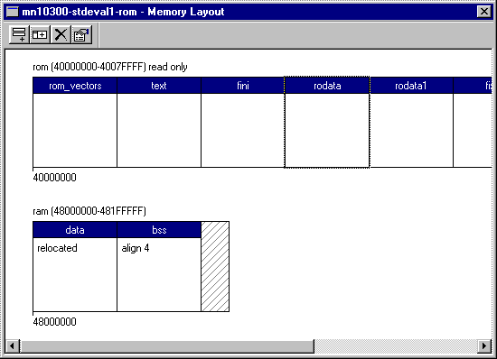
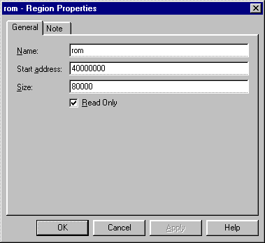
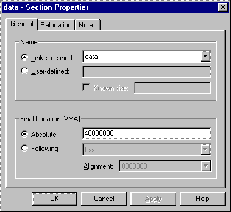
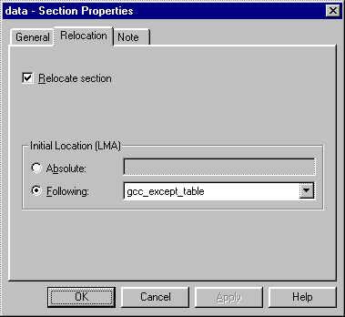

The memory layout window presents a graphical view of the memory layout for the currently selected combination of target architecture, platform, and start-up type. Each memory region is represented by a horizontal bar within the window. Each bar is divided into a number of blocks representing memory sections. Unused parts of a memory region are represented using hatching. All numeric information is presented in hexadecimal format:

Default memory layouts are provided for all supported platforms and it is not necessary to edit these layouts in order to start development with eCos. However, it may be necessary to modify the memory layouts when, for example, additional memory is installed on an evaluation board. When the memory layout is modified, a new linker script fragment is generated and the linker is therefore able to make use of the new memory.
In addition to the linker-defined output sections, the memory layout window allows the user to specify memory sections which are to be reserved for use by a specific eCos application. The Configuration Tool will ensure that such user-defined memory sections are not used by eCos itself.
The memory layout window includes controls to create, delete and modify the properties of both memory regions and memory sections (collectively referred to as memory items). These manipulation functions are accessible from both the system menu and the toolbar. When modifying or deleting an item, it is necessary to first select it using a pointing device. The currently selected item is displayed with a focus rectangle (as section rodata above). Creation and modification of a memory item is achieved using a property sheet. The property sheet for a memory item may also be accessed by double-clicking on the item in the memory window.
Details of a memory region may be specified or modified using the region properties sheet. The general settings page of this sheet allows editing of the region parameters:

The name of each memory region is arbitrary but should not contain spaces or punctuation characters. The start address and size of each memory region should be specified in bytes and entered as hexadecimal numbers. The read only check box should be checked where the memory region represents a block of read-only memory. This information is used to verify that the initial and final locations of any relocating memory sections are within appropriate memory regions.
The note page of the region properties sheet may be used to keep notes concerning the memory region. These notes are saved with the memory layout in the build tree.
Details of a memory section may be specified or modified using the section properties sheet. The general settings page of this sheet allows editing of the parameters which are common to all sections:

Each memory section is either linker-defined or user-defined. The name of a linker-defined section is selected from a drop-down list appropriate for the currently selected target architecture. Only those names which are not currently in use are presented. The name of a user-defined section is entered from the keyboard and should not contain spaces or punctuation characters. The size of a user-defined section may also be specified by checking the known size check box. The size should then be entered as a hexadecimal number. User-defined sections of unknown size are assumed to occupy all available space up to next section or the end of the memory region.
The final location (VMA) of a memory section may be defined using an absolute start address or by specifying another section which it follows in the memory map. Where an absolute address is required, this should be entered as a hexadecimal number. Alternatively, the preceding section may selected from a drop-down list of appropriate existing sections. In this case, the alignment of the section in terms of an n-byte boundary should also be selected.
The relocation settings page allows editing of the parameters which are specific to relocating sections:

The relocation of a memory section at system start-up is enabled by checking the relocate section check box. The initial location (LMA) of a memory section may be defined using an absolute start address or by specifying another section which it follows in the memory map. Where an absolute address is required, this should be entered as a hexadecimal number. The address must lie within a read-only memory region. Alternatively, the preceding section may selected from a drop-down list of appropriate existing sections. The initial location of the preceding section must be located in a read-only memory region.
The note page of the section properties sheet may be used to keep notes concerning the memory section. These notes are saved with the memory layout in the build tree.
User-defined memory sections may be accessed using C pre-processor macros defined in a memory layout header file exported by the Configuration Tool. The name of the memory layout header file appropriate for the current configuration is defined by the CYGHWR_MEMORY_LAYOUT_H macro in the pkgconf/system.h header file.
Macros specifying the start address and size are defined for each user-defined memory section and may be accessed as follows:
Example 2-1. Accessing a user-defined memory section named example
#include <pkgconf/system.h>
#include CYGHWR_MEMORY_LAYOUT_H
int main ()
{
// use the memory section as an integer array
int * array = (int *) CYGMEM_SECTION_example;
unsigned int array_size = CYGMEM_SECTION_example_SIZE / sizeof (int);
// initialize each array element
unsigned int count;
for (count = 0; count < array_size; ++count)
array [count] = 0;
return 0;
} |